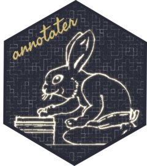

The goal of annotater is to annotate package load calls in character strings and R/Rmd files, so we can have an idea of the overall purpose of the libraries we’re loading.

Where did I get them?

The two annotation types are also available together:

Thanks to Juan Cruz Rodriguez, we can now annotate which functions from each package are being called in a script.

pacman compatibility
Users of the pacman package can now use all annotater functions on p_load calls. This includes calls with multiple package names (e.g. p_load(ggplot2,purrr)), which will be split up across lines for readability.


Installation
Install the CRAN release or the development version with:
# Install annotater from CRAN:
install.packages("annotater")
# install.packages("remotes")
remotes::install_github("luisDVA/annotater")Restart RStudio after the installation for the addins to load properly.
Example
These are the possible annotations, which can be added to character strings (with one line per element), or applied to .R or .Rmd files in RStudio through their corresponding addins.
library(annotater)
test_string <-c("library(boot)\nrequire(Matrix)")
writeLines(annotate_pkg_calls(test_string))
writeLines(annotate_repo_source(test_string))
writeLines(annotate_repo_source(test_string))Entire .R files can also be parsed and annotated with the annotate_script function.
A note on the tidyverse
The tidyverse package is a meta-package with few exported functions of its own, so the annotation tools provided here (annotate_fun_calls) will not match the functions from the various individual packages (such as dplyr or readr) that get attached when loading tidyverse. This is by design, so consider loading individual packages if annotations for function calls are desired.
Feedback welcome
Thanks to Jonathan Carroll, Fırat Melih Yılmaz, and Achaz von Hardenberg for feedback and suggestions.